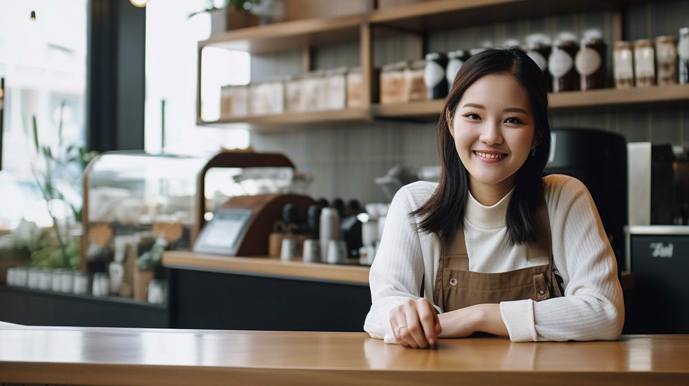
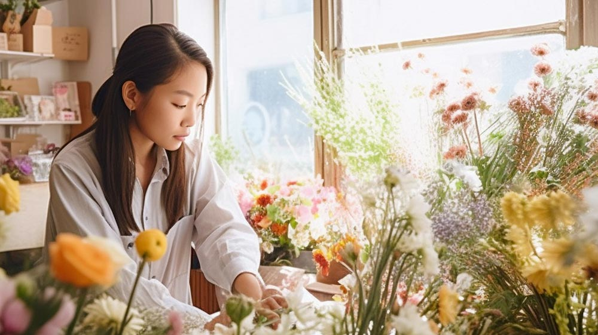
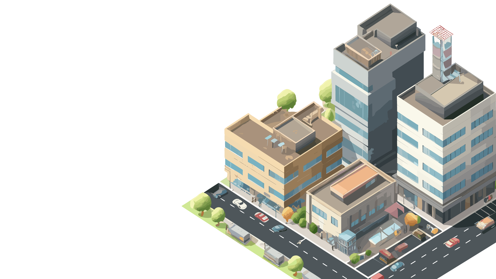

COMPANY会社概要
| 見出し | ここに説明など入れて下さい。サンプルテキスト。 |
|---|---|
| 見出し | ここに説明など入れて下さい。サンプルテキスト。 |
| 見出し | ここに説明など入れて下さい。サンプルテキスト。 |
| 見出し | ここに説明など入れて下さい。サンプルテキスト。 |
| 見出し | ここに説明など入れて下さい。サンプルテキスト。 |
| 見出し | ここに説明など入れて下さい。サンプルテキスト。 |
当テンプレートの使い方
初心者向けマニュアル公開中
画像加工やテンプレートの編集方法、無料サーバーを使ってサイトを公開するなど動画をまじえてわかりやすく解説しています。
初心者向けマニュアルはこちら。
titleタグ、copyright、metaタグ、他の設定
titleタグの設定はとても重要です。念入りにワードを選んで適切に入力しましょう。
まず、htmlソースが見れる状態にして、
<title>派遣会社向け 無料ホームページテンプレート tp_haken1</title>
を編集しましょう。
あなたのホームページ名が「サンプル派遣会社」だとすれば、
<title>サンプル派遣会社</title>
とすればＯＫです。SEO対策もするなら冒頭に重要なワードを入れておきましょう。
copyrightを変更しましょう。
続いてhtmlの下の方にある、
Copyright© サンプル派遣会社 All Rights Reserved.
の部分もあなたのサイト名に変更します。
metaタグを変更しましょう。
htmlソースが見える状態にしてmetaタグを変更しましょう。
ソースの上の方に、
content="ここにサイト説明を入れます"
という部分がありますので、テキストをサイトの説明文に入れ替えます。検索結果の文面に使われる場合もありますので、見た人が来訪したくなるような説明文を簡潔に書きましょう。
h1ロゴのaltタグも変更しましょう。
html側に、
alt="サンプル派遣会社"
となっている箇所があるので、この部分もあなたのサイト名に変更しましょう。
ヘッダーのメニューについて
画面幅900px未満で開閉メニュー（ハンバーガーボタン）に切り替わります。
900pxのブレイクポイントを変更したい場合、cssフォルダのstyle.cssの
@media screen and (min-width:900px) {
と、jsフォルダのmain.jsの
var winBP = 900;
の900の数字を変更して下さい。
尚、この数値を変更すると、メニュー以外のブレイクポイントももちろん変わるので注意して下さい。
開閉メニュー内には、小さな端末時にのみ表示させる事ができるブロックが入っています。実際に画面幅を900px未満にすると見れますので確認してみて下さい。
梱包している画像について
  
上記の画像類は全てAI出力です。このテンプレートの公開時点では、AIサイトによると「著作は作り出した人のもの」（＝当サイト）という規約になっているようです。
著作は当サイトにある事を前提とした上で、当サイトのテンプレート内でしたら自由にご活用下さって構いません。
トップページのメイン画像（イラストタイプ又は写真タイプ）
イラストタイプについては、illustrator形式のファイル(.ai)も梱包しています。トレースタイプなのでイラスト内のパーツだけを動かすのには不向きです。また、よく見ると違和感があるパーツがあったりします。
他のイラストに入れ替えたい場合は、無料イラストのイラストACさんがおすすめ。※ACさんの利用規約を別途お読み下さい。
キーワード検索に、アイソメトリックを指定すると、斜め上から見たようなイラストだけ出てきます。
他の写真に入れ替えたい場合は、無料写真の写真ACさん（無料写真サイト）がおすすめです。※ACさんの利用規約を別途お読み下さい。
トップページのメイン画像ブロックの高さについて
現状、16:9の比率でレスポンシブになるような設定になっています。
比率の異なる背景画像を使いたい場合は、cssフォルダのstyle.cssの、
#mainimg {
の中にある、
padding-top: 56.25%;
の数値を変更して下さい。
56.25というのは、9÷16=0.5625のことです。
もし3:2で使うなら、2÷3=0.6666...なので、66.66%と指定すればOKです。
トップページのメイン画像ブロック内のテキストについて
画面幅900px未満で、いくつかの文字が非表示になります。
html側を見ると、pcというclass名がついたものが複数あり、このpcスタイルが指定されているものが900px未満で非表示となります。（pcサイズでのみ表示するので、その意味でpcとつけています）
このスタイルがないままで小さな画面にしてしまうと文字が切れてしまうのでこのスタイルを用意しました。臨機応変にこのスタイルを活用して下さい。
既にclassがついている場合、半角スペースで区切って複数指定ができます。
<span class="small pc">
pcスタイルは、他のページやブロックでも使えます。
サムネイルスライドについて
slickを使ったスラドショーになっています。slick 公式サイト
テンプレート内の解説及び、当サイト上でのマニュアル以外のサポートは基本的には行なっておりませんので、使いこなしたい方はGoogle検索などかけてみて下さい。
写真の縦横サイズを予め揃えておくと綺麗に並びます。
枚数は自由に変更できます。html側に既存の写真ブロックをコピペして新しい画像ファイル名に書き換えて下さい。
スライドショーの設定は、jsフォルダのslick.jsで調整できます。
slickを使う為に必要なタグ、ファイル類。
1. html下部にある、「jQueryファイルの読み込み」のタグ。※下のjsファイルより先に読み込んで下さい。
2. その下にある、「スライドショー（slick）」からの数行のタグ。
3. jsフォルダ内の「js/slick.js」。
アイコン画像について（Font Awesomeの解説）
imagesフォルダに入っていない画像（アイコン）は全てFont Awesomeの素材です。
Font Awesome 公式サイト
Font Awesome アイコン一覧
iタグを使ってhtmlに直接アイコンを読み込む場合と、cssの擬似要素を使って読み込む場合があります。
それぞれ他のアイコンに置き換えたい場合は、当サイトのマニュアルをお読み下さい。
Font Awesomeを使う為に必要なタグ、ファイル類。
cssフォルダのstyle.css冒頭で読み込んでいる「Font Awesomeの読み込み」のブロック。
何年も経過した場合、動作に問題が出てくる可能性があります。
テンプレートを編集していないのに突然動きがおかしくなった場合は、style.cssの冒頭でCDNから読み込んでいるFont Awesome関連のファイルのバージョンを変更して動作するか確認してみて下さい。
トップページの「お知らせ」ブロックのアイコンについて
「その他」「サービス」など、テキスト部分はhtml側で直接入力されていますので必要に応じて編集して下さい。
アイコン用の文字数が増えすぎるとレイアウトが崩れます。ご注意下さい。
背景色は、cssフォルダのstyle.cssの、
#new dt span
や、
#new dt span.icon-bg1
のbackgroundでそれぞれ変更できます。
新しいアイコンを追加したい場合、上記の「#new dt span.icon-bg1」ブロックをコピペし、.icon-bg1部分を.icon-bg2などに変更し、backgroundに好きな色を設定します。
後はhtml側で、
<span class="icon-bg2">〜〜〜</span>
などとすればOKです。
出現アニメーションについて
以下のような出現のアニメーションサンプルをsample_inview.htmlにまとめています。
好きなアニメーションに簡単に変更できますし、オリジナルのものを作る事もできます。
汎用開閉ブロックのサンプル
以下は「FAQ」を例にサンプルを用意していますが汎用的な開閉ブロックなので、基本的にはどこにでも使えます。
クリック対象としたいブロックにclass="openclose"とつければ、続く要素が自動的に開閉ブロックになります。
もしすでにclass指定がある場合は、半角スペースで区切って追加すればOKです。
例：class="sample openclose"
- ここに質問を書きます。クリックで回答が開きます。
- ここに回答を書きます。サンプルテキスト。ここに回答を書きます。サンプルテキスト。ここに回答を書きます。サンプルテキスト。
- ここに質問を書きます。クリックで回答が開きます。ここに質問を書きます。クリックで回答が開きます。ここに質問を書きます。クリックで回答が開きます。ここに質問を書きます。クリックで回答が開きます。
- ここに回答を書きます。サンプルテキスト。ここに回答を書きます。サンプルテキスト。ここに回答を書きます。サンプルテキスト。ここに回答を書きます。サンプルテキスト。ここに回答を書きます。サンプルテキスト。ここに回答を書きます。サンプルテキスト。ここに回答を書きます。サンプルテキスト。
ここに回答を書きます。サンプルテキスト。ここに回答を書きます。サンプルテキスト。ここに回答を書きます。サンプルテキスト。
大見出し
小見出し小見出しの補足。
左右で使う場合は、外側に必ず<div class="c2">を作ります。その中に、class="text"とclass="image"でテキストブロックと画像ブロックを分けます。テキストブロックと画像ブロックのどちらを左右によせるかは、セットで記載するlかrによって振り分けできます。lはLeft(左)で、rはRight(右)です。このブロックの場合、<div class="text l">と<div class="image r">で指定しているので、テキストが左で画像が右にきます。
尚、小さな端末では、常にテキストが冒頭にきます。
大見出し
小見出し小見出しの補足。
こちらは上の逆で、<div class="text r">と<div class="image l">という指定になっています。
大見出しがレイアウトの邪魔になる場合、<h2 class="hidden">とclass指定する事で見た目だけ非表示にできます。このブロックでその指定が入っているのでhtml側を見て下さい。
sectionの冒頭には見出しを入れる事が推奨されていますので、見出し自体は入れるようにした方がいいかと思います。
背景色（bg1）
section class="bg1"とするとこの背景色になります。
背景色（bg2）
section class="bg2"とするとこの背景色になります。
背景色（bg3）
section class="bg3"とするとこの背景色になります。